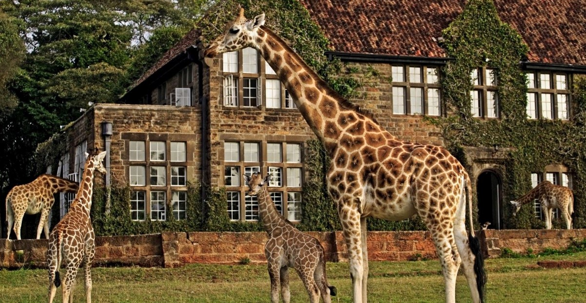
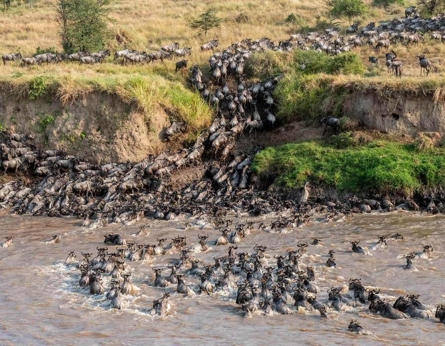

Destination Guide
Kenya
The only country where you can watch a lion at dawn and a sunset over the Indian Ocean the same day.
Best time to go
Jun–Oct & Jan–Feb
Fly into
Nairobi (NBO) or Mombasa (MBA)
Currency
Kenyan Shilling (KES)
Suggested stay
7–10 days
Plan This Trip
Search flights and hotels for Kenya right here — no extra tabs.
Prefer another search engine? Kiwi.com →
Why go
Most trips split into two halves: a few days on safari chasing the Big Five across the savannah, then a run down to the coast for warm water and slower mornings. Nairobi ties it together — a genuine capital city with good coffee, a giraffe sanctuary you can visit before lunch, and direct flights to just about everywhere else in the country. You don't need three weeks to do it justice; a well-planned week gives you a real taste of both worlds.




Where to Stay — Nairobi
Nairobi is a good first and last stop — land, sleep off the jet lag, and get an easy win with the giraffes before heading further afield.

Sarova Stanley
Nairobi's oldest hotel, right in the CBD. Colonial-era character, walkable to the Karen Blixen and railway museums.

Rooftop pool deck
The Stanley's rooftop terrace is worth booking dinner at even if you're staying elsewhere — good for a first-night reset.

Sarova Panafric
Quieter, leafier grounds near Kenyatta National Hospital — a solid mid-range base with easy access to Uhuru Park.
Nairobi, Before You Head Out
Sleep with the giraffes
Giraffe Manor lets endangered Rothschild's giraffes poke their heads into the breakfast room. Book many months ahead — it's tiny and famous.
Giraffe Centre (day visit)
Can't get a bed at the Manor? The Giraffe Centre next door offers the same hand-feeding for the price of an entry ticket.

Sheldrick Wildlife Trust
Watch orphaned elephant calves being bottle-fed and mud-bathed at the daily public visiting hour, before they're eventually released back into Tsavo.
A safari before your safari
Nairobi National Park is the only park bordering a capital city — a half-day game drive with skyscrapers on the horizon.
Safari: Where to Go
Kenya's parks each have a different personality. Pick based on how much time you have and what you want to see most.

Maasai Mara
Kenya's headline park, and home to the Great Migration — over a million wildebeest and zebra crossing the crocodile-filled Mara River, roughly July through October. Dense predator population year-round, so it's worth a visit even outside migration season. About a 45-minute flight from Nairobi.


Amboseli
Large elephant herds set against Mount Kilimanjaro across the border in Tanzania — the classic postcard shot. About 4 hours' drive from Nairobi, or a short flight.
Nairobi National Park
Best if you're short on time — rhino, giraffe, zebra and lion within a 20-minute drive of the airport. No elephants, but almost everything else.
Tsavo — Kenya's largest park, known for its red-dust elephants — is the other heavy hitter most longer itineraries build in.
The Coast: Mombasa, Diani & Watamu
Fly from Nairobi to Mombasa (about an hour) and the pace changes completely. White sand, warm Indian Ocean water, and Swahili coastal architecture.

Serena Beach Resort, Mombasa
Swahili-style architecture right on the sand at Shanzu, north of Mombasa town — a reliable, well-run all-rounder.

English Point Marina, Mombasa
A modern waterfront hotel on the old town creek — infinity pool, marina views, and Fort Jesus a short drive away. Good if you want Mombasa city rather than a beach resort.

Diani Beach resorts
South of Mombasa, Diani has the widest range of beachfront resorts and the best kitesurfing conditions on the coast.

Watamu
Quieter and further north. Watamu Marine National Park has some of Kenya's best snorkelling and diving right offshore.


Watamu Marine National Park
One of the oldest marine parks in East Africa. Green sea turtles are a near-guaranteed sighting on a snorkel trip out to the reef, and the coral gardens are shallow enough for beginners. Pair it with lunch at one of the stilted pier restaurants along the beach.

Drive under Mombasa's Tusks — four aluminium tusks spanning Moi Avenue, built for a royal visit in 1952 and now the city's best-known landmark.

Fort Jesus, a 16th-century Portuguese fortress and UNESCO World Heritage Site in Mombasa's Old Town, is worth half a day before you head to the beach.
Beyond the Big Parks: The Rift Valley Lakes
If you have extra days, or you've done the Mara before, Kenya's lakes offer a different kind of scenery — flamingos, hippos, and freshwater coastline instead of savannah.

Lake Nakuru National Park
A soda lake famous for its flamingo flocks, and now a rhino sanctuary too — one of the more reliable places in Kenya to see both black and white rhino. About 3 hours from Nairobi by road.

Lake Victoria
Africa's largest lake, bordering Kenya, Uganda and Tanzania. The Kenyan shore around Kisumu is low-key and rarely visited by tourists — boat trips, fishing villages, and birdlife instead of crowds.
Getting There


Kenya Airways
Kenya's national carrier, "The Pride of Africa," flies into Jomo Kenyatta International Airport (NBO) in Nairobi from a wide network of African, European, Middle Eastern, and Asian cities, with onward domestic connections to Mombasa, the Mara, and Lake Victoria region airstrips. It's usually the most convenient way to combine an international leg with internal safari hops on a single ticket.
A Simple 8-Day Route
Days 1–2
Nairobi
Land, settle in, Giraffe Centre and a half-day in Nairobi National Park.
Days 3–4
Amboseli
Drive or fly out for elephants and Kilimanjaro views.
Day 5
Fly to Mombasa
Short hop from Nairobi or Amboseli airstrip to the coast.
Days 6–8
Diani or Watamu
Beach, snorkelling, and doing nothing much at all.
Good to Know
Getting around
Domestic flights between Nairobi, the safari parks, and Mombasa are cheap and cut travel days dramatically. Road transfers work too, just budget more time.
Entry requirements
Most visitors need an eTA (electronic travel authorisation) arranged online before arrival. Check the official Kenya eTA site rather than third-party lookalikes.
Packing
Neutral-coloured safari layers, a light rain jacket, sun protection, and swimwear for the coast leg. Evenings in the highlands get cool even in the dry season.
Start Planning Your Kenya Trip
Compare flights to Nairobi and Mombasa, and browse safari-ready hotels, in one place.